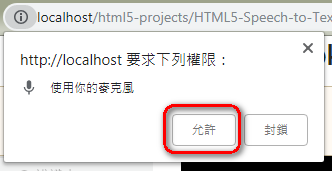
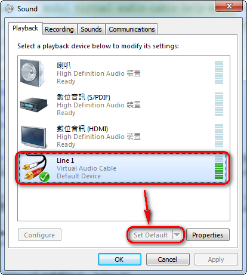
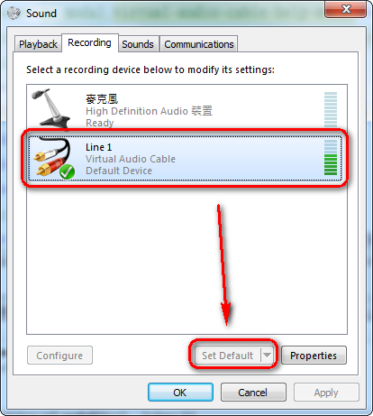

by
布丁布丁吃什麼？
{{ i18n.t('Web Speech to Text') }}
{{ i18n.t('Please install and enable Virtual Audio Cable:') }}
Windows
|
Mac
{{ i18n.t('Help') }}
{{ i18n.t('Load Local File') }}
{{ i18n.t('Load from URL') }}
{{ i18n.t('Load Demo') }}
{{ i18n.t('Loading') }}
{{ i18n.t('Start') }}
{{ i18n.t('Playing') }}
{{ i18n.t("Finish in") }}
{{ finishTime }}
{{ i18n.t('Finish') }}
Your browser does not support the audio element.
{{ i18n.t('Language') }}
{{ i18n.t('cmn-Hant-TW') }}
{{ i18n.t('cmn-Hans-CN') }}
{{ i18n.t('en-US') }}
{{ i18n.t('ja') }}
{{ i18n.t('ko') }}
{{ i18n.t('Custom Language') }}
{{ i18n.t('Filename') }}
{{ i18n.t('Output type') }}
{{ i18n.t('Subtitle (.srt)', false) }}
{{ i18n.t('OpenDocument Spreadsheet (.ods)', false) }}
{{ i18n.t('Plain text (.txt)', false) }}
{{ i18n.t('Only caption (.txt)', false) }}
{{ i18n.t('Output download') }}
{{ i18n.t('Download') }}
{{ i18n.t('Start from') }}
-
{{ i18n.t('End in') }}
{{ i18n.t('Caption') }}
{{ i18n.t('Load from URL') }}
{{ i18n.t('Support:') }}
{{ i18n.t('YouTube, for example: ') }}
https://www.youtube.com/watch?v=GE7sc_XvJ8w ({{ i18n.t('cmn-Hant-TW') }})
,
https://www.youtube.com/watch?v=cUh978LguQk ({{ i18n.t('Long video') }})
,
https://www.youtube.com/watch?v=P7qfM0Q2wkk ({{ i18n.t('ja') }})
,
https://www.youtube.com/watch?v=PAKVWL7XdWo ({{ i18n.t('ko') }})
{{ i18n.t('Video:') }}
{{ i18n.t('MP4 format with code VP8, VP9, H.264') }}
{{ i18n.t('Audio:') }}
{{ i18n.t('wav, ogg, mp3 format') }}
{{ i18n.t('Cancel') }}
{{ i18n.t('OK') }}
{{ i18n.t('Grant Microphone Permission') }}
{{ i18n.t('This APP use your microphone. Please grant microphone permission.') }}

{{ i18n.t('Grant') }}
{{ i18n.t('Enable Virtual Audio Cable') }}
{{ i18n.t('Open your Sound setting.', false) }} {{ i18n.t('Set Virtual Audio Cable default in playback and recording.', false) }}
 
{{ i18n.t('OK') }}